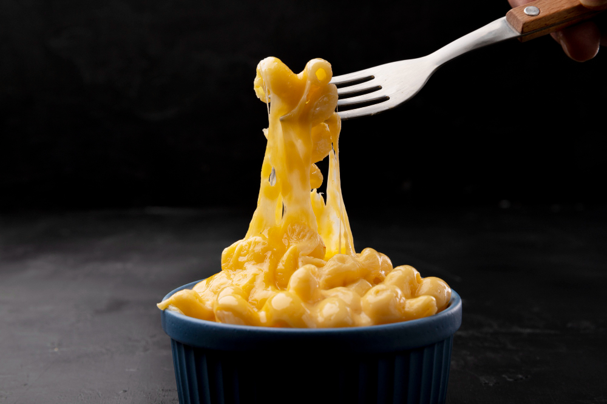

Mac and Cheese

Description
This is an easy to make mac and cheese, topped with buttered bread crumbs for comfort food. Simple recipe to make at home with easy to find ingredients, using Cheddar and Parmesan for the cheese.
Ingredients
- Macaroni
- Butter
- Flour
- Milk
- Cheddar cheese
- Parmesan cheese
- Salt and pepper
- Paprika
- Brad crumbs
Steps
- Gather all ingredients. Preheat the oven to 350 degrees F (175 degrees C). Grease an 8-inch square baking dish.
- To make the macaroni and cheese: Bring a large pot of lightly salted water to a boil. Add macaroni and simmer, stirring occasionally, until tender yet firm to the bite, about 8 minutes; it will finish cooking in the oven. Drain and transfer to the prepared baking dish.
- While the macaroni is cooking, melt 1/4 cup butter in a medium skillet over low heat. Whisk in flour and stir until the mixture becomes paste-like and light golden brown, 3 to 5 minutes.
- Gradually whisk 2 ½ cups milk into the flour mixture, and bring to a simmer.
- Stir in shredded Cheddar and finely grated Parmesan cheeses; season with salt and pepper. Cook and stir over low heat until cheese is melted and sauce has thickened, 3 to 5 minutes, adding up to 1/2 cup more milk if needed.
- Pour cheese sauce over macaroni and stir until well combined.
- Make the bread crumb topping: Melt 2 tablespoons butter in a skillet over medium heat. Add bread crumbs; cook and stir until well coated and browned.
- Spread bread crumbs over macaroni and cheese, then sprinkle with paprika.
- Bake in the preheated oven until topping is golden brown and macaroni and cheese is bubbling, about 30 minutes.
Home